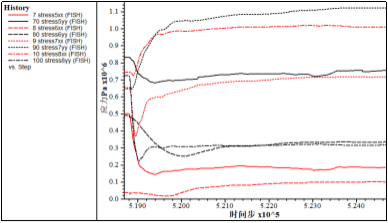

1明月山2号入口段
SZK1钻孔，岩层主要为粉质粘土，风化千枚状砂岩。
(1)初始模型
图1 初始模型
图2 初始量测点分布
根据工程地质横断面图在CAD中等比例绘制隧道断面图，根据断面图等比例生成的明月山2号隧道入口段离散元模型如图1所示，地层从上到下主要为粉质黏土、全风化千枚状砂岩、强风化千枚状砂岩、中风化千枚状砂岩。图2给出了相关量测点位置信息，测量点顺序按照顺时针标记。
(2) 力链分布及调整
初始力链在地层作用下有明显分解面，上部破碎岩土层的初始力链主要呈竖直分布，下部完整性较好的岩层中力链分布较均匀且值较大，值得注意的是该隧道比较典型，左侧隧道位于风化层，右侧隧道位于较完整中风化千枚状砂岩岩层，右侧隧道顶板围岩处于分界面处。从图3、图4来看，开挖后两个隧道偏压严重，右侧隧道发生明显的应力集中，该集中部位需要注意加强支护。
图3 初始力链
图4 力链调整
(3)开挖过程应力调整及位移场
表1 初始地应力
量测点 | 水平应力/MPa | 垂直应力/MPa |
1 | 0.074 | 0.054 |
2 | 未设置 | 未设置 |
3 | 0.086 | 0.13 |
4 | 0.036 | 0.27 |
5 | 0.5 | 0.83 |
6 | 0.038 | 0.49 |
7 | 0.64 | 0.65 |
8 | 0.75 | 0.72 |
左侧隧道基本处于外露状态，围岩也基本以土体为主，从应力调整曲线图5中可以看出除了底板竖向方向发生明显的卸载调整外，其余方向的应力调整过程比较平缓，两帮水平应力卸载也比较平缓。同时图6给出的右侧隧道的应力调整过程都符合开挖过程中加卸载过程，由于隧道顶板围岩位于风化程度较高的岩层，因此应力释放不明显，6号测量点的水平应力重分布不明显。
图7给出了开挖后的位移和破坏情况，左侧隧道和右侧隧道均不能在无支护状态下自平衡，会发生超过10cm级别的变形，同时会有局部张拉裂纹甚至是块体脱落现象产生。
图5 左侧隧道应力调整

图6 右侧隧道应力调整

图7 位移及裂纹